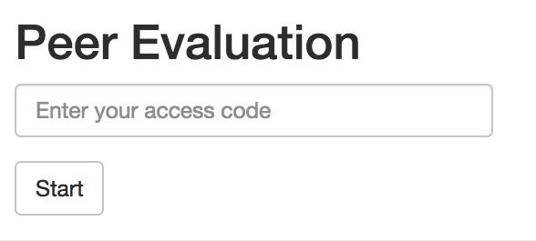
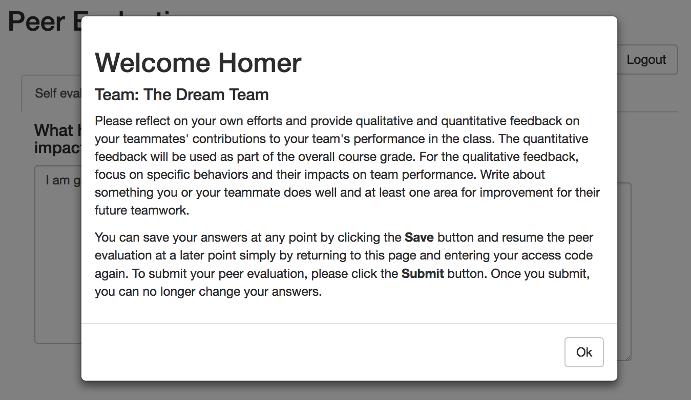
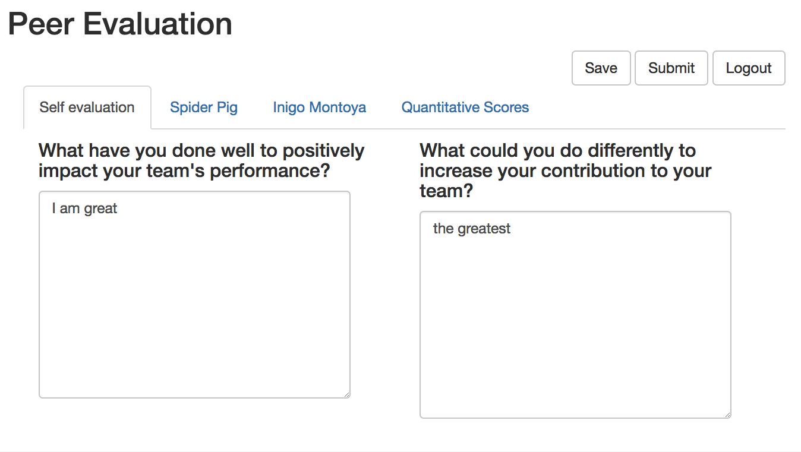
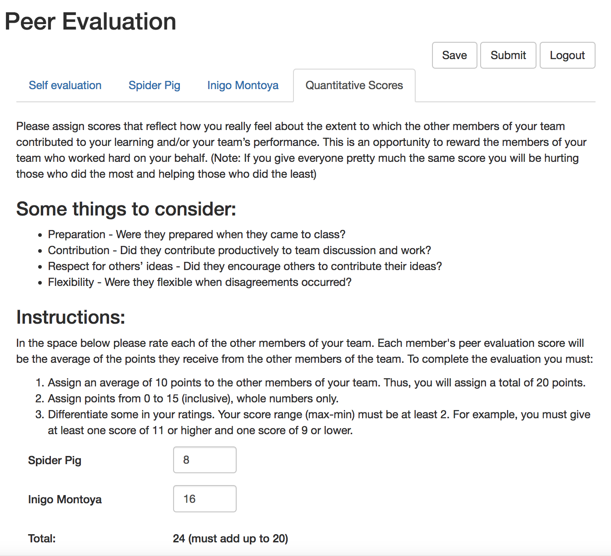

vignettes/peer_evaluations.Rmd
peer_evaluations.RmdPeer Evaluations are an important component of the Team-Based Learning (TBL) style flipped classroom. However, they can be difficult to set up and evaluate because of the requirement for each team member to evaluate only their own team members and the amount of data generated in big classes. This package provides tools to set up a custom web-based peer evaluation application that can be hosted for free on RStudio’s shiny apps server (or any other shiny server) and allows each student to log in and enter evaluations for their teammates with a unique passcode. All evaluations are stored in a google spreadsheet only the instructor has access to (via their own google drive credentials) and the data can be aggregated easily using the tbltools package.
To generate and host a peer evaluation, you need the following:
Peer evaluations conveniently store the student responses in a google spreadsheet. Log into your google drive account and create a new empty google spreadsheet with a descriptive name (for example something like this: class1234 peer evaluation 1). This spreadsheet is where your peer evaluation data from all students will be stored. You should create a new spreadsheet for each peer evaluation.
See the credentials vignette for details on how to set up google credentials for your spreadsheet.
library(tbltools)
key_file <- "path/to/peer_evaluations_access_key.json"
tbl_setup_peer_evaluation(
folder = "peer eval 1",
data_gs_title = "class1234 peer evaluation 1",
gs_key_file = key_file
)#> Info: creating app directory 'peer eval 1'
#> Info: copying 'roster_template.xlsx' to peer eval 1/roster.xlsx
#> Info: creating peer eval 1/app.R application file and application content
#> Info: creating peer eval 1/evaluation.Rmd evaluation file
#> Info: set up of tbltools' Peer Evaluation app in directory 'peer eval 1' is complete.Please modify the files in 'peer eval 1' as appropriate and run tbl_test_peer_evaluation('peer eval 1') before before uploading to shiny server.What just happened? tbltools created the peer eval 1
folder and populated it with all the necessary files to launch a peer
evaluation shiny application, which we will test locally in a moment.
Let’s take a look at what files were created first:
list.files("peer eval 1", full.names = TRUE, recursive = TRUE)
#> [1] "peer eval 1/app_quantitative_scores.md"
#> [2] "peer eval 1/app_self_evaluation_minus.md"
#> [3] "peer eval 1/app_self_evaluation_plus.md"
#> [4] "peer eval 1/app_teammate_evaluation_minus.md"
#> [5] "peer eval 1/app_teammate_evaluation_plus.md"
#> [6] "peer eval 1/app_welcome.md"
#> [7] "peer eval 1/app.R"
#> [8] "peer eval 1/evaluation.Rmd"
#> [9] "peer eval 1/gs_key_file.json"
#> [10] "peer eval 1/roster.xlsx"
#> [11] "peer eval 1/www/app.css"app_...md: these markdown files contain place-holder
text for the peer evaluation application that you may want to customize
to better reflect what you want the text in the peer evaluation to say.
The format is of these files Markdown, which is a
simple text formatting language.app.R: this is the actual R script that launches the
peer evaluation application. Take a look inside this file and modify the
function call to fit your preferences (e.g. the title of the
application, how many points per teammate, etc.) - see the help on the
?tbl_run_peer_evaluation function for details on all
available parameters.evaluation.Rmd: this is a template RMarkdown file to evaluate the
data collected during the peer evaluation. For examples of what the
functions in this file do, see the evaluation
section at the end of this document. Feel free to modify this evaluation
file (or not use at all) as you see fit.gs_key.json: this is a copy of your google
authentication key file for the peer evaluation spreadsheets. This
allows the peer evaluation application to write the students’ responses
to the google spreadsheet linked to the application. Without this file,
the application would not be able to record any of the data. The key
file is safe to use on a secure shiny app server but be careful to never
post the file anywhere publicly as it could be used to gain access to
the peer evaluation spreadsheets.roster.xlsx: this excel file contains a template list
of students and their team affiliations (more details below). Please
modify this file by hand to fit your class so that the peer evaluation
application knows which access codes are valid and can provide each
student automatically with a prompt to evaluate each of their team
mates. The application never modifies this file (only you can
modify it), it is used purely as a read-only data table.www/app.css: this is a CSS stylesheet file that
describes the stylistic formatting of the peer evaluation application.
Modify this file to change colors, font sizes, etc (the basic style is
the Bootstrap style). You may
also include any other static files in the www folder that
should be included in the application (e.g. image files).For testing this new peer evaluation, feel free to jump straight to the testing section below.
If you like the formatting and default text of the peer evaluation application, the roster is really the only file you need to edit. The template looks as follows:
readxl::read_excel(file.path("peer eval 1", "roster.xlsx")) %>%
rmarkdown::paged_table()As you can see, the excel sheet has only four columns, student last
name (last), first name (first), individual
unique access code (access_code) and team name
(team). You may add additional columns to this spreadsheet
if you would like to keep the information organized together (such as
e.g. email addresses) but cannot omit these four. The first and last
names are simply for the application to provide information to the
students whose evaluation they are filling out (the last name is
optional as seen in the example of Marvin). The team name must
be identical between all team member so that the peer evaluation can
identify each team correctly. The access_code can be any
combination of letters, numbers and special characters that is unique
across the whole roster as it allows each student to log into the peer
evaluation (i.e. these access codes need to be conveyed to the
students). To generate a random set of access codes, this package
provides a convenience function to do so:
tbl_generate_access_codes(n = 10, length = 6)
#> 5C0KH4
#> IZSSDR
#> SIHGXV
#> ONRII7
#> J0VAO4
#> 2Z5VEO
#> 9FVOUT
#> 30VEUC
#> NLK9FL
#> 1QX95YOnce you have set up your first peer evaluation and adjusted all the
text and formatting, you may want to use it as a template for future
peer evaluations rather than starting from scratch each time. This is
most easily accomplished by using the
tbl_duplicate_peer_evaluation function instead of
tbl_setup_peer_evaluation. Simply point the function to
your previous peer evaluation folder (the template), specify the name of
the new folder, and provide the name of the new google spreadsheet the
application should be linked to (note that the spreadsheet should
already exist so the new peer evaluation can make sure it has access to
it).
tbl_duplicate_peer_evaluation(
old_folder = "peer eval 1", new_folder = "peer eval 2",
data_gs_title = "class1234 peer evaluation 2")#> Info: creating app directory 'peer eval 2'
#> Info: copying 11 files from template 'peer eval 1' into 'peer eval 2'...
#> Info: changing spreadsheet title to 'class1234 peer evaluation 2'.
#> Info: peer evaluation app from 'peer eval 1' is now fully duplicated in directory 'peer eval 2'.Please modify the files in 'peer eval 2' as appropriate and run tbl_test_peer_evaluation('peer eval 2') before before uploading to shiny server.If you encounter any issues with authentication, run the following function to test google drive credentials and check that the google spreadsheet can be accessed:
tbl_check_gs_access(
folder = "peer eval 1",
data_gs_title = "class1234 peer evaluation 1"
)For example, you may get the following error trying to test your peer evaluation application because of a problem with your authentication token (expired or for the wrong account):
tbl_test_peer_evaluation("peer eval 1")#> Loading required package: shiny
#> ***************************************************************
#> Info: launching Peer Evaluation GUI (version 0.8.0)...
#> Info: app title: 'Peer Evaluation'
#> Info: roster: 7 students in 2 teams
#> Info: points per teammate: 10 (min: 0, max: 15, min diff: 2)
#> Info: testing authentication with key file 'gs_key_file.json'...
#> Info: authentication successful.
#> Info: looking for spreadsheet 'class1234 peer evaluation 1'...
#> don't have access to a unique sheet with this exact nameFinally, if you ever want to start over from scratch, simply delete
the created folder (or rename it) and run
tbl_setup_peer_evaluation() again.
For additional information on the
tbl_setup_peer_evaluation (or any other tbltools function),
please consult the package help with
?tbl_setup_peer_evaluation.
To test the peer evaluation appliation, simply use the
tbl_test_peer_evaluation function, which launches the
application on an adhoc local server on your own computer. Keep in mind
that although the test application run just on your computer, it already
writes data to the google spreadsheet! This is good for testing purposes
(see what gets generated in your google spreadsheet) but make sure to
delete any test records from the google spreadsheet that may interfere
with students’ peer evaluations prior to providing the students with the
link to the deployed peer evaluation app. For this reason, Many people
keep at least one test person in the roster (or a whole test team) to
make testing easier.
tbl_test_peer_evaluation("peer eval 1")#> ***************************************************************
#> Info: launching Peer Evaluation GUI (version 0.8.0)...
#> Info: app title: 'Peer Evaluation'
#> Info: roster: 7 students in 2 teams
#> Info: points per teammate: 10 (min: 0, max: 15, min diff: 2)
#> Info: testing authentication with key file 'gs_key_file.json'...
#> Info: authentication successful.
#> Info: looking for spreadsheet 'class1234 peer evaluation 1'...
#> Info: looking for spreadsheet "class1234 peer evaluation 1"...
#> Info: spreadsheet retrieved successfully.
#>
#> Listening on http://127.0.0.1:3683
#>
#>
#> INFO: Loading GUI instance ...The following is a screenshot of the login screen for the peer
evaluation application. Note that you can change, for example, the
displayed title with the app_title parameter in the
app.R application file.

Upon succesful login - here from the example student Homer
Simpson who is part of the template roster.xlsx, the
student sees a welcome message with their team name listed and welcome
text that can be modified in the app_welcome.md file. Note
that the default instructions also describe how students can save their
peer evaluations and resume editing them at a later point (logging in
with the same access code), only once they submit their answers they
become final.

After the welcome message, the student is presented with a set of
tabs for self evaluation (first tab), one tab for each team member (here
Spider Pig and Inigo Montoya who are also part of
The Dream Team as listed in the template
roster.xlsx), and a final tab for quantitative scores. The
self evaluation and team member tabs are essay questions for qualitative
peer evaluation.

The quantitative evaluations are provided on a separate tab as
illustrated below and are subject to the constraints set through the
parameters of the tbl_run_peer_evaluation function in the
app.R application file (e.g. number of points per student,
required difference in max and minimum assigned points if any,
etc.).

To make your peer evaluation application available to the students,
it needs to be deployed on a server the students havde access to
(i.e. not just on your own computer). You or your university may run its
own shiny server in which case they can simply host your application
folder (i.e. the peer eval 1 folder) on it. However, more
commonly, the easiest approach is using RStudio’s free shiny apps service. Once you have an
account, you need to install the rsconnect package
(install.packages('rsconnect')) and configure your
shinyapps credentials
(rsconnect::setAccountInfo(name="<ACCOUNT>", token="<TOKEN>", secret="<SECRET>")).
For a detailed guide, see this
configuration help. Once your credentials are set, simply call the
tbl_deploy_peer_evaluation function to upload your peer
evaluation app to the shinyapps server. Note that you can also use the
rsconnect::deployApp function directly, or launch the test
application (tbl_test_peer_evaluation) and click the
Publish button in the upper right corner.
tbl_deploy_peer_evaluation(folder = "peer eval 1")Once your students have filled out their peer evaluations, you can
pull the data directly from the google spreadsheet by hand or with your
own script. The tbltools package provides some convenience functions for
frequent data evaluation operations, such as summarizing the data by
student. The evaluation.Rmd template file in your peer
evaluation app folder provides a good starting point for this. Here we
show with an example google spreadsheet how the data aggregation
functions work and what the evaluation summaries look like and how to
export them easily to an Excel spreadsheet for further processing.
# download data from google spreadsheet (stored in an .xlsx file)
pe_data <- tbl_fetch_peer_evaluation_data(data_gs_title = "class1234 peer evaluation 1")
pe_data %>% rmarkdown::paged_table()#> Warning: The `data_gs_key` argument of `tbl_fetch_peer_evaluation_data()` is deprecated
#> as of tbltools 0.6.0.
#> ℹ Please use the `data_gs_id` argument of `tbl_setup_peer_evaluation()`
#> instead.
#> This warning is displayed once every 8 hours.
#> Call `lifecycle::last_lifecycle_warnings()` to see where this warning was
#> generated.
#> Info: proceeding with provided google spreadsheet
#> Info: downloading data to './pe_data_downloaded.xlsx'... complete.
pe_data %>% tbl_summarize_peer_evaluation_data(submitted_only = FALSE) %>%
rmarkdown::paged_table()
pe_data %>% tbl_export_peer_evaluation_data(submitted_only = FALSE)
#> Info: exporting peer evaluation data and data summary to 'pe_data_summary.xlsx'... completed.